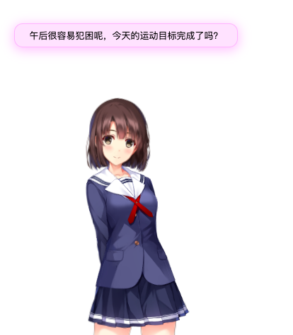

<h1 id="live2D-message"><a href="#live2D-message" class="headerlink" title="live2D-message"></a>live2D-message</h1><p><br></p>
<blockquote>
<p>关于人物模型的message功能，目前完全使用了另外一个github开源项目的代码。</p>
</blockquote>
<h4 id="原工程地址👉galnetwen-Live2D"><a href="#原工程地址👉galnetwen-Live2D" class="headerlink" title="原工程地址👉galnetwen/Live2D"></a>原工程地址👉<a href="https://github.com/galnetwen/Live2D" title="galnetwen">galnetwen/Live2D</a></h4><h4 id="依赖文件"><a href="#依赖文件" class="headerlink" title="依赖文件"></a>依赖文件</h4><ul>
<li>jquery.min.js</li>
<li>message.js</li>
<li>message.json</li>
</ul>
<p>核心文件的修改以及如何使用都可以参考上面的源工程。</p>
<p>使用方法很简单，例如——</p>
<p><a href="https://github.com/fguby/live2D/blob/master/katou.html" title="圣女惠">圣女惠</a></p>
<p>效果如图</p>
<p></p>
